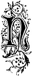
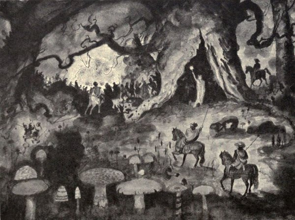
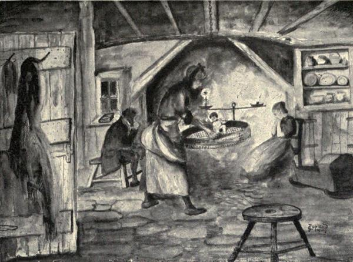

“There’s als much virtue, sense, and pith,
In Annan or the Water of Nith,
Which quietly slips by Dumfries,
Als any water in all Greece;
For there, and several other places,
About mill-dams, and green brae faces,
Both eldrich elfs and brownies stayed,
And green-gowned fairies daunced and played.”
—Effigies Clericorum.
o part of the folk-lore of a district finds more favour than that particular vestige which tells of the doings of “fairies and brownies,” the mere expression “fairy” at once calling up and suggesting green-clad dainty figures, dwelling amid picturesque sylvan surroundings; although probably the memory of the “brownie,” and the stories of his helpful midnight task, strike the more human note.
It is the “fairy,” however, outshining the humbler toiling “brownie,” not only in gallant bearing and romantic surroundings, but in the further possession of greater supernatural power, that is the more fascinating survival of superstitious tradition.
Popularly imagined, they were diminutive in form, elegant in appearance, and richly attired. They dwelt in a land of their own, in woodland dells where
“Underneath the sylvan shade
The fairies’ spacious bower was made,”
or in beautiful palaces underneath the green conical mounds, so numerous, particularly in Galloway and the south-west of Scotland. Their lives and affairs were ruled by the utmost ceremony and grandeur. A King or Queen presided over their destinies. Their pageants and tournaments were the very reflection of Courtly gallantry. Processions were a frequent form of display; and clothed in exquisite green raiment, and mounted on bravely caparisoned milk-white steeds of the finest mettle, they passed with haughty mien and lordly air, that impressed to the utmost the minds of the mortals who might chance to meet them in all their pomp and bravery. The banquet-board and feast also were daily in evidence, and through their princely halls, to the most exquisite music, the stately dance went round.
The attitude of the fairies towards mankind was, generally speaking, kindly and helpful, so much so that by the country people they were often termed the “good neighbours” and the “wee fouk”; but underneath all their display of nobility, an elfin craftiness and capriciousness of disposition existed, malignant to a degree. They did not, for example, ride unarmed, but had bows and arrows of peculiar power and potency slung at their sides ready to assail the too curious human being or menacing beast. The bows themselves were fashioned from the ribs of men buried “where three Lairds’ lands meet,” and the arrows, which hung in quivers made from adders’ sloughs, were “tipped with deadly plagues.” When mortals offended, it was on their cattle the fairies usually wreaked their vengeance by shooting them with their magic bows and arrows. Such elf-shot cattle exhibited all the symptoms of malignant cramp. Animals quite as innocent, but who, blunderingly unconscious, threatened to trample their diminutive bodies under foot as they passed along, were as summarily treated—at least that was a common explanation to account for puzzling forms of cattle-ill; for the wound of the true elf arrow was so small that evidence of penetration was almost impossible of vision, unless by the eye of those favoured and deeply skilled in fairy-craft practice. A less vague and more material description of the fairy arrows was, that “these fatal shafts were formed of the bog reed, pointed with white field flint, and dipped in the dew of hemlock.” To this day the triangular flints of the Stone Age are associated with the fairy superstition, being popularly known as “elf bolts,” and the occasional turning up of these flints on cultivated land, finds a superstitious explanation in the belief that a shower of these arrows discharged into a field was quite sufficient to blast and wither the expected crop.
The special characteristic of the evil element in the disposition of the fairies was however, a persistent practice of kidnapping unchristened infants, substituting for them baby imps of their own, which in old-world phraseology were known as “changelings.” Such changelings could only be detected and expelled by certain charms and mystic practice, which also permitted the real babe to be restored. The explanation of such kidnapping was that every seventh year “Kain,” in the form of a living sacrifice from the ranks of the fairies, was demanded by Satan, their master, as the price of the supernatural privileges they enjoyed, but as a mortal infant was as readily accepted, the fairies naturally acted in accordance, much preferring to lay a human babe at the feet of the Evil One.
Very naturally the thought of such disastrous possibilities to the domestic life and joy of the people created means and measures to render this particular design of the fairies impotent and inefficient. The cutting of a cross on the head of the cradle, or even over the doorway of the cottage itself, was supposed to “kep skaith” by means of its sacred significance; and immediately before the birth of a child it was a common practice to surround the expectant mother with everything about the household made of steel, such as scissors, wool-clippers, knives, needles, and so forth, which it was firmly believed kept the evil disposition of the fairy spirits at bay, and prevented any unhallowed tampering with the child. It was also customary for the friends of the house when the child was born, to form a guarding circle round it during the darkness of the night, while one of their number was specially employed in waving about the open leaves of a Bible. The risk of abduction immediately ceased after the child was christened. It may here be mentioned that at all times the sound of a church bell immediately broke the fairy power and spell.
The abduction of human beings was not altogether confined to babes, and it will be remembered that James Hogg’s fine ballad of “Kilmeny” is founded on a young maiden being carried off to Fairyland, who in the course of time is allowed to return to the world again when, as so beautifully expressed in the ballad,
“Late, late in the gloamin’
Kilmeny cam’ hame.”
Young married women were more especially liable to be carried off, for the utilitarian purpose of nursing the fairy children, and young men were also occasionally supposed to be stolen away.
It may be noted that it was not considered good for mortals to meet with fairies face to face, however much by accident. Death might even follow such a meeting, although apparently quite natural in form.
Touching upon the very core of unreality of fairy semblance it would seem to have been a general belief, that seen through eyes of those gifted with supernatural power such as in olden days the “seers” were believed to possess, the whole fairy fabric crumbled to its true appearance. Golden treasure became ordinary stone, fairy palace changed to gloomy cavern, and the beautiful beings themselves became ugly and repulsive goblins.
Before passing to gather up the remnants of this fairy-lore in Galloway and Dumfriesshire, it may be of interest to refer to the theory which has been advanced to account for the firm belief by our forefathers in the existence of “fairies and brownies,” which briefly is, that fairies and brownies were none other than straggling and isolated survivors of the race of the ancient Pictish Kingdom of Scotland, for like the fairy and brownie of popular imagination, the Picts dwelt in underground abodes, being what is termed “mound-dwellers.” They were a small people, untiring in their labours, and possessing great strength, or as it has been aptly expressed, “they were ‘unca wee’ bodies, but terribly strong.” As well as being small in stature, they were hairy in body and fleet of foot. They were clever builders, as their underground dwellings excavated at the hands of antiquarians throughout Scotland yet affirm. Indeed there is a tradition that the 12th century Cathedral of Glasgow was largely built by industrious and skilful Picts, brought from Galloway for that purpose.
A strong point in the theory certainly is, that the localities known as the prehistoric abiding places of the Picts are almost invariably associated with fairy-lore and tradition, which has floated down to us on the misty tides of time. At all events it may be in part at least accepted, in so far as it is founded on a basis of fact, and if it does not quite explain the splendour and high-born attributes of Fairyland, it at least goes far to account for the unvarying popular description of “Brownie”—his untiring energy, his shy disposition, and his not very attractive appearance, all of which William Nicholson has painted with strokes of genius in his matchless poem, “The Brownie of Blednoch.”[19]
Fairies in Galloway.
The great distinctive headland of the Mull of Galloway is traditionally described as the scene of the last stand made by the Picts, as they were driven backwards and seawards to destruction by the overwhelming force of the Scots.
“There rose a King in Scotland,
A fell man to his foes,
He smote the Picts in battle,
He hunted them like roes,
Over miles of red mountain
He hunted as they fled
And strewed the dwarfish bodies
Of the dying and the dead.”
Not far from this classic spot, a favourite haunt of the fairies is located. South of Portankill there is a small fortification called the Dunnan. On this spot there came once upon a time to a man sitting there, on a fine summer evening, an old-fashioned looking, diminutive woman dressed in green, carrying a tiny ailing child on her back, and holding a little wooden water stoup in her hand. She earnestly asked this man to go to the far-famed and quite near “Well of the Co’” and bring her some of the healing water for the decrepit little morsel she carried, as she was tired and done. Churlishly enough the man refused, and roughly told her she could go her own errands. The little woman bore his abuse patiently enough, then, naming him, solemnly warned him “never again to sit down on her hoose-riggin’ or he might look to it”—and then somehow she seemed to disappear. The man began to regret his ungracious conduct, all the more that it was generally believed that beneath the “Dunnan” lived the fairies, and if that was so, then at that very moment he was actually on their “hoose-riggin’.” Much disturbed in mind, he made for home; but tradition affirms that from that day forward everything went wrong—cattle died and crops failed, and eventually, going one night to the Dunnan to watch a vessel that was likely to come ashore and so help his own evil plight, he was stricken with illness at the hands of the fairies—so the country-side said—and died.
There is yet another rather dramatic relic of fairy-lore concerning Kirkmaiden, which tells of an attempt by the fairies to seize upon the newly-born child of a herd and his wife, who were in the service of Sir Godfrey M‘Culloch, and who lived in a little cottage at Auchneight, which was frustrated by a timely call for Divine aid. On the afternoon of the day of his son’s birth the herd received an urgent message to proceed at once to his master’s castle of Cardoness, in the Stewartry of Kirkcudbright. There were many little domestic matters to attend to before the poor man could leave his wife and child to set out on his long journey, and the night was already well advanced before he left his home. It was not without anxiety and misgiving he took his way north along the western shore of Luce Bay, “down the path towards the Loup and the Co’ of the Grennan,” a place with a very uncanny reputation, for it was the night of the last day of October—of all times of the year the most dreaded by mortals—the night
“When Fairies ... dance,
Or ower the lays, with splendid blaze,
On sprightly coursers prance.”

“In Fairy Glade.”
Sketch by J. Copland, Dundrennan.
It was very dark, and his progress was slow. When he reached the “Loup” he was rather startled to see a faint glimmering light seawards. To his consternation this came steadily towards him, and gradually took the form of a coach lighted with blue lamps, drawn by six horses, and coming smartly on. It passed, and he could see it was crowded with elfish figures and surrounded by a galloping body-guard. His terror was not abated when he was made aware that a little blue torch, a sure forerunner of death, was burning on the side of the track they had passed along. Meanwhile his young wife and child were all alone in the cottage. About midnight the mother, to whom the night seemed unending, was startled by hearing the trample of horses, the jingle of bridles, the lumber of wheels, and a buzzing sound of voices. Clasping the child close in her arms, terror-stricken she waited. The door of the cottage flew open. The whole kitchen was lit up with a strange unnatural light, and she saw her bed surrounded by a throng of little excited green-clad people, who kept up a constant chattering. Then one more richly clad and taller than the others imperiously waved his hand for silence, and addressing the almost crazed woman, said—
“This is Hallow-eve. We have come for your child, and him we must have.”
“Oh, God forbid!” shrieked the poor woman in her agony, and almost instantly there was darkness and silence as of the grave.
When the poor woman came to her senses, for she had fainted, she made bold to leave her bed, and lighting her cruisie lamp, she was overjoyed to find that her child was sleeping sweetly and soundly. Everything in the cottage was evidently undisturbed.
As some slight corroboration of this legend, it is told how the tenant of Barncorkerie, going to his door about midnight that same Hallow-eve, was startled to see a group of tiny horsemen riding in hot haste through the meadows a bowshot from his door.
The story of the Barncorkerie Fairy, in this same immediate neighbourhood, illustrates how the good offices of the fairy aided an old helpless woman in her day of necessity at the expense of an undutiful son.
On the road shorewards to Portencockerie Bay (Kirkmaiden) there is a bypath by way of what is known as the Bishop’s Castle. One day there came by this road an old woman, weary of foot and sad of heart. Sitting down she wept quietly to herself, bemoaning her poverty and the unkindness of her son, and more particularly of his new-made wife, who scorned her and refused to give her even the bare necessities of life. With her eyes fixed on the ground, she almost unconsciously let her attention turn to a round whorl-like stone, with a hole through it, lying at her feet. Not attaching much importance to it she, almost absent-mindedly, picked it up, and as she did so she thought she heard some one whispering to her, but turning round and seeing no one she became a little frightened, and putting the curious little stone in her pocket, she rose to make her way home, which, by the way, bore the curious name of “Keekafar.”
That same night, at the gloaming, as she was lighting her cruisie lamp, the cottage door seemed to open of its own accord, and, looking down, she saw a diminutive little woman clad in green, who, with a pleasant smile, asked how she prospered?
The old woman was a proud old woman, so she answered that she was getting along very comfortably.
But the little old woman laughed a kindly laugh and said, “Not much comfort an’ a toom meal-barrel in the hoose.”
The Fairy, for it was a fairy, chatted away to her for a little, and gradually won from her the whole story of her troubles; then, as she rose to go, she said, “If ye’ve still got that queer little stone ye fand to-day wi’ the hole in it, just tie a little bit grey wurset thread through it, and lay it on the meal-ark. It’ll maybes be a help.”
Next night, about the same time (as it afterwards appeared), the old woman’s son Godfrey, who lived with his wife on his own little croft at Portencockerie, was startled to find when he came home a little tiny woman perched on a high stool at his fireside.
“What want ye here?” he cried; and his wife, joining him, began to scold also. “Tak’ yer gait, we want nae beggars here,” she shouted.
The Fairy looked at them steadily with her little grey piercing eyes, then stepping from the stool on to the long wooden kitchen settle she turned to the frightened man and woman, and in a tiny penetrating voice that made them even more frightened, said—“The poor folk! much they get at your hands! But thy old mother shall never want; she shall live at your cost. Her meal-ark will be always full, and yours shall supply it!”
And so it came about. Godfrey and his wife, under the influence of fear, tried hard to make amends, but the old woman received their advances with the utmost indifference.
The Compass Stone, on the hill above Port Logan towards the south, was also a favourite place for the fairies holding their gatherings, and there is a small field at Logan known as the Fairy Park. It is said that a large company of fairies were observed by two individuals, who at the time were not near each other, crossing the fields near Kenmure, in the parish of Stoneykirk. One of the individuals said they seemed to be all talking together, and there was a continual buzz of conversation as of a large assemblage of people gathered together.
A hill between Ringuinea and the Float is associated with the fairies. Two young women went from Ringuinea one summer morning to bring the cows home to be milked, when they met what seemed to be a very beautiful child, whom they unsuccessfully made every endeavour to catch hold of. Skilfully, however, and with evident little exertion, the little figure eluded their grasp, with the result that their futile chase led to their being hopelessly behind time for the milking.
Another story tells that the farmer of Ringuinea was going down the Black Brae, when he met a very small person handsomely dressed in green. Thinking it was a strange child, he enquired where he was going so early in the morning. The supposed child answered that there was an ox down below that had annoyed him and his people for a long time by always standing on the top of their dwelling-place, but that he would trouble them no more. The farmer proceeded down the brae, and found one of his best bullocks lying dead. He went for assistance, and proceeding to skin the bullock, and knowing what to look for, they found an elf-shot right through the heart.
Kirkmaiden seems to have been a much-favoured district of the “wee fouk.” The Nick of the Balloch, on the road from Barncorkerie to Castle Clanyard, Curghie Glen, and the Grennan were notoriously fairy-occupied; and between Kirkbride and Killumpha their imaginary tracks left on the stones and rocks used to be pointed out and traced. There is a curious lingering tradition in the Rhinns that the fairies of Kirkmaiden always wore red caps instead of green.
Before passing from this district of the Rhinns, reference may be made to what was firmly believed to be the kidnapping by fairies of a little boy of two years of age. The child wandered out unperceived by its mother. On being missed, an anxious search was made during the whole day by almost every person in the neighbourhood, but no trace of the child could be found. Late in the evening, however, from the top of the heugh, beside Slock-an-a-gowre, he was discovered, by the merest accident, asleep on a green plot on the cliff far below, fully two miles from his home. How he got there to this day is a mystery. To assume that any person carried or left him there seems highly improbable, and to suppose the child to have of itself crossed dykes, drains, glens, and cornfields seems even more improbable. It was therefore attributed to the fairies, all the more that the little boy lisped that he had followed other little boys wearing green clothes.[20]
Away midst the solitary grandeur of the high lands of Galloway, where the Merrick lordly towers, and where the bleat of the sheep and the cry of the whaup, the tumble and plash of burn and stream, are the only sounds that greet the shepherd’s ear as he pursues his long and lonely beat, a beautiful fairy legend lingers, though human and homely enough in its trend:—
“A shepherd’s family had just taken possession of a newly-erected onstead, in a very secluded spot among ‘the hills o’ Gallowa’,’ when the goodwife was, one day, surprised by the entrance of a little woman, who hurriedly asked for the loan of a ‘pickle saut.’ This, of course, was readily granted; but the goodwife was so flurried by the appearance of ‘a neibor’ in such a lonely place, and at such a very great distance from all known habitations, that she did not observe when the little woman withdrew or which way she went. Next day, however, the same little woman re-entered the cottage, and duly paid the borrowed ‘saut.’ This time the goodwife was more alert, and as she turned to replace ‘the saut in the sautkit’ she observed ‘wi’ the tail o’ her e’e’ that the little woman moved off towards the door, and then made a sudden ‘bolt out.’ Following quickly, the goodwife saw her unceremonious visitor run down a small declivity towards a tree which stood at ‘the house en’.’ She passed behind the tree, but did not emerge on the other side, and the goodwife, seeing no place of concealment, assumed she was a fairy.
In a few days her little ‘neibor’ again returned, and continued from time to time to make similar visits—borrowing and lending small articles, evidently with a view to produce an intimacy; and it was uniformly remarked that, on retiring, she proceeded straight to the tree, and then suddenly ‘gaed out o’ sight.’
One day, while the goodwife was at the door, emptying some dirty water into the jaw-hole (sink or cesspool), her now familiar acquaintance came to her and said:
‘Goodwife, ye’re really a very obliging bodie! Wad ye be sae good as turn the lade o’ your jaw-hole anither way, as a’ your foul water rins directly in at my door? It stands in the howe there, on the aff-side o’ that tree, at the corner o’ your house en’.’
The mystery was now fully cleared up—the little woman was indeed a fairy; and the door of her invisible habitation being situated ‘on the aff-side o’ the tree at the house en’,’ it could easily be conceived how she must there necessarily ‘gae out o’ sight’ as she entered her sight-eluding portal.”(50)
Probably the most characteristic fairy story extant in the whole south-western district of Scotland is that which centres round the green mound on which the ruined Castle of Myrton, a stronghold of the M‘Cullochs in bygone days, stands. Within the policies of Monreith House, in the parish of Mochrum, on the beautifully-wooded shore of the White Loch of Myrton, this mound of Myrton is peculiarly interesting in the links its story joins of prehistoric days, fairy tradition, and seventeenth century family history.
The following account is drawn from The Hereditary Sheriffs of Galloway:—
“Sir Godfrey M‘Culloch, having squandered his patrimony and sold his estates in Mochrum to the Maxwells of Monreith, took up house at Cardoness. Here a neighbour, William Gordon, having poinded some cattle straying on his lands, Sir Godfrey joined a party illegally convened to release them. A fray was the result, in which M‘Culloch, in the words of his indictment, ‘did shot at the said Gordon with a gun charged, and by the shot broke his thigh-bone and leg, so that he immediately fell to the ground, and within a few hours thereafter died of the same shot wound.’ Sir Godfrey fled the country, and some years after ventured on a Sunday to attend a Church in Edinburgh. A Galloway man was among the congregation, who, recognising him, jumped up and cried: ‘Pit to the door; there’s a murderer in the kirk!’ This was done, M‘Culloch arrested, tried, condemned, and his head ‘stricken fra his body’ the 5th of March, 1697.”
So say the Criminal Records. There is a very different local version of the story:—
Long before the fatal encounter, and before he had entered on the evil courses which led to his ruin, Sir Godfrey, young and curly, sat at a window in the Tower of Myrtoun watching the operations of a gang of workmen forming a new sewer from his house to the White Loch below it. Suddenly he was startled by the apparition close beside him of a very little old man whose hair and beard were snowy white, whose strangely-cut costume was green, and who seemed in a state of furious wrath. Sir Godfrey received him, notwithstanding, with the greatest urbanity, and begged to be told in what way he could serve him.
The answer was a startling one: “M‘Culloch,” said the visitor, “I am the King of the Brownies![21] My palace has been for ages in the mound on which your Tower stands, and you are driving your common sewer right through my chalmer of dais.”
Sir Godfrey, confounded, threw up the window and ordered the workmen to stop at once, professing his perfect readiness to make the drain in any such direction as might least incommode his Majesty, if he would graciously indicate the same. His courtesy was accepted, and Sir Godfrey received a promise in return from the now mollified potentate that he, the said King, would stand by and help him in the time of his greatest need.
It was long after this that the Knight of Myrtoun disposed of his enemy in the summary way we have already mentioned, and for which he was condemned to die. The procession had started for the place of execution; a crowd was collected to see the awful sight, when the spectators were surprised by seeing a very little man with white hair and beard, dressed, too, in an antique suit of green, and mounted on a white horse. He issued from the castle rock, crossed the loch without a moment’s hesitation, and rode straight up to the cart on which Sir Godfrey, accompanied by the executioner and a minister, was standing. They plainly saw Sir Godfrey get on the horse behind the little man, who was no other than the King of the Brownies (and thus fulfilled his promise by arriving in his hour of need): the two recrossed the loch, and, mounting the castle rock, they disappeared. When the astonished crowd again turned their eyes to the cart a figure was still there, and wondrous like Sir Godfrey; it was, therefore, generally believed that he had met a felon’s doom, and most people thought no more about it. A few only knew better, but these cared little to speak about the matter. At rare intervals, however, one of the initiated would impart the story to a friend, and tell how a head had rolled upon the ground, leaving a bleeding trunk upon the scaffold; then adding in a confidential whisper, “It was no’ him ava; it was just a kin’ o’ glamour.”(51)
The presence of fairies was not unknown in the Whithorn district, and a realistic account of the last appearance of the fairies there has been preserved in Droll Recollections of Whithorn, by James F. Cannon:—
“A farmer’s wife on the Glasserton estate was engaged in washing at a stream near her house, when a trig little creature of her own sex, and perfectly human in shape and general semblance, suddenly arrested her attention. The mistress stared with amazement at the mite of a body that stood by her side, and the astonishment of the former was not lessened when, with an appealing look on her tiny features, the elf solicited the favour of ‘a wee sowp o’ milk for an unweel wean.’ They then entered freely into conversation, and walked together to the byre, where the Fairy was duly supplied with what she had asked for. She was very profuse with her thanks, and foretold that her donor would never be without a pinch of snuff (of all things) while she should require it. It was not a very hazardous prediction, nor did it give promise of great remuneration for the obligation conferred; but there was a note of gratitude in it which was thoroughly appreciated by her to whom it was spoken. I believe, however, there was an additional hint dropped that the milk pails of the elf’s patroness would always be well filled, and her husband’s field crops abundant.”(52)
A poetical version of the above tradition has been elaborated by Mr Cannon, and appears in the Bards of Galloway, under the title of “The Langhill Fairy.”[22]
“Riddling in the reek” was the common country-side expression for a rough-and-ready method of treating a fairy changeling so that it might be restored to its proper human constitution. A realistic account of such an ordeal is preserved in Galloway Gossip (Wigtownshire). It sets forth how a child, whose parents lived in Sorbie village, behaved in such a fretful, passionate, and vixenish way that the parents were at last forced to the unwelcome conclusion that it was not their child at all, but a changeling. Much distressed they sought the advice of a wise woman living at Kirkinner, who plainly enough substantiated the suspicion. Beseeching her help, the sybil pointed out the great risk they all ran with interference with things uncanny, but on their consenting to place themselves entirely in her hands and implicitly obey her in every detail, she promised to make the attempt to restore their child on the following Aul’ Hallowe’en Nicht.

“Riddling in the Reek.”
Sketch by J. Copland, Dundrennan.
“When Aul’ Hallowe’en came, everything was ready and set in order, and just a few minutes before nine, in came Lucky M‘Robert, and without saying a word steekit the door ahint her.
She then set two stools beside the fire, which, as usual at that time and for long after, was made on a slightly raised place in the middle of the floor, paved with water-stones. She motioned Peggy and Jamie to sit down on them, and lighting the candle, with the ether-stane on it, put it on the kerl, or long candlestick, and set it between them, and then took the rowan-wood and biggit it on the fire.
The wean looked terrified, and ran under the bed, but she pulled it out and tied his legs and arms together with some red clouts she had in her pouch, and threw’t into the riddle, and lifting it up went towards the fire, the wean twining and kicking and swearing most viciously.
Mally had previously breeked her petticoats, and as soon as a thick reek rose from the burning rowan-tree, she held the wean amang the thickest o’t, and riddled it in the riddle till ye wud hae thocht it wud hae been chokit.
The wean cursed and yelled, and spat at her, and called her a’ that was bad, but she took nae notice; then it begged and fleech’t with the father and mother to save’t, for it was chokin’, and went on pitiful, and then it begood and cursed them, and abused them terribly.
Then there came knockings to the door, and cries and noisings all over the house; but she riddled away, and nobody ever heeded them, till at last the wean gave a great scraich, and rase out of the riddle, and gaed whirling up amang the reek like a corkscrew, and out at the lumhead, out of sight.
Everything was then quiet for a minute or two, and at last a gentle knocking came to the door, and Mally asked who was there, and a voice cried—
‘Let me in, I’m wee Tammie M‘K——.’”(53)
The district of Dalry seems to have been particularly favoured by the beings of supernatural power. Witchcraft abounded, and now we shall see that Fairyland was represented.
The place, above all, of fairy association was the Holm Glen, with which is associated a legend of the abduction of a youth, and an abortive attempt to win freedom after serving seven years. Round this vestige of fairy-lore Dr Robert Trotter has woven a well-told mantle of narrative, from which an extract is well worth quoting:—
“I rose early upon the morning of Hallowe’en, and having dressed myself, I went out to the harvest field, just as the minute hand of my watch pointed to half-past five. I began busily to arrange and set up the stooks, which a storm of wind and rain the preceding evening had blown down. I had not been long occupied in this manner when I heard the tramping of horses’ feet, the giggling and laughing of the riders, and the jingling of their bridle bits. I instantly turned round to see what this troop of early travellers could be; but my eye rested not then on the broad holm of Dalarran and the grey turrets of Kenmure Castle, of which there was a goodly prospect from the place where I stood—but it fell upon the tall form of a young man standing close by my side, dressed in a riding-cloak of the lightest Lincoln green ever worn by a Nottingham Archer. By his side hung a hunting-horn of the purest silver, whilst his spurs and the diamond chased scabbard of his sword glanced clear and bright in the rays of the rising sun.
‘I wish thee good speed, John Gordon,’ said he in a well-known voice. ‘I am thy old friend William Hoatson, who, thou mayest remember, was found drowned about seven years since in the Water of Taarfe, near Red Lyon. But I am not dead, as is generally believed, but was carried away by the fairies of Holm Glen, and a body resembling mine placed in the river ford. And I have been permitted to appear unto thee at this time, knowing that thou art a fearless man, and one that seeketh after the Kingdom of Heaven; and I request thee, in the name of Heaven, that this night thou wilt win me back to my family and to the world!’
I expressed the happiness which I felt in meeting so unexpectedly with one whom I had so long considered to be dead. I shook him heartily by the hand, and offered him my friendship and assistance.
‘Oh, John!’ said he, ‘this night will I be offered up a sacrifice in hell, and thou alone can save me from destruction.’
He spoke this so mournfully that the tears trickled down my cheek, and I sobbed aloud.
‘Wilt thou promise,’ continued he, ‘to come this night at twelve o’clock, unarmed and alone, and stand by this ancient thorn-bush, where thou wilt see forty-one horsemen riding past, everyone dressed as I am at present? Pull me down from the chestnut-brown steed upon which I ride, for I will be the last man of that gay troop. They will turn me into a variety of frightful shapes in thy arms, and lastly into the appearance of a red-hot coulter; but thou must hold me fast in the name of Heaven, for if thou let me slip from thy hands they will take thee soul and body, and I also will be lost for ever!’”(54)
The conclusion of the story is not very happy, for John’s courage entirely failed him. Through fear he refused his aid, but ever afterwards was haunted and crossed by the evil influence of the night-riding of the fairies of Holm Glen.
Other places in Kirkcudbrightshire which have the lingering touch of fairy romance hovering around them are Hazelfield, Auchencairn, the Nick of Lochenkit, “where the fairies have been seen dancing in thousands by the pale light o’ the new moon on her third nicht,” and on the “rugged height of Bengairn.”
The last Galloway fairy reminiscence we shall quote before passing into Dumfriesshire illustrates the malignant side of their nature, and tells of the drowning of the Morrisons in Edingham Loch, near the present town of Dalbeattie:—
“A’ the hale o’ braid Gallowa’ has heard the story of the drownin’ o’ hale ane-an’-twenty o’ the Morrisons o’ Orr, in the Loch of Edingham, nae farder gane than Yule was a seven year. Ye mind that year the frost held on frae Hallowe’en till Februar, and at Yule the ice was mair than thretty inches in thickness, and wad hae carried a’ the fouk in sax parishes roun’ wi’ perfect safety. On that day mony a weel-fared, sturdy chiel had been busy plying the channelstane, wi’ a’ their skill an’ might, frae early morn, and it was not till the last blinks of the sun had lang disappeared off Brownie Fells that the contest was putten aff till the following day, and ilka ane turned his face homewards. But they hadna ha’en their feet three minutes on the side when the moon glowered o’er the tappin o’ Lotus, and showed the ice they had so lately left, clad wi’ unco players frae side to side; and muckle mirth, din, and deray was there, bumpers o’ the red wine were flowin’ roun’, and there tripped maidens, jimp and tall as yon rowan-trees by the burnie side and fairer than the snow on Logan braes. Swiftly the weary players returned to the margin of the loch, but nane durst venture on the ice for a considerable time. But there were three neibor lairds, in the three Mailins of Culloch, Cocklick, and Drumlane. A’ the three were surnamed Morrison, and ilka ane had seven strapping sons, wha never feared skaith frae man nor deil, and sae they a’ quickly joined the thrang. Bit strange to tell, the very moment the last o’ the ane-an’-twenty was aboon deep water, the ice rent from en’ to en’ wi’ a crack a thousan’ times louder than thunner, and dancers, players, and Morrisons a’ disappeared in the twinkling of an eye, and the ice again resumed its former solidity, without crack or flaw. And mony a time sinsyne has the midnight wanderer observed the loch covered o’er with light-footed dancers, blithely footing it on the limpid wave, and among them the three-times-seven youths, gaily clad in elfin weeds of sylvan green, and mounted on gallant steeds of the milk-white foam. Their spears are of the green bulrashes with targets of the braidest flutterbaus; they ha’e braid swords o’ the segg, and cockades of the water-lily; but they ay tak’ the gate lang or the first peep o’ day, and the place they left retains no the sma’est prent o’ their airie feet, nor nane can tell the gate they fled.”(55)
On the sharp descent of the Dalbeattie Road towards Dumfries there yet lingers the tradition of fairy song and music being heard ’mid the leafy surroundings of the Long Wood.
Fairies in Dumfriesshire.
To Allan Cunningham we are indebted for several examples of fairy-lore gathered together in his own particular district of Nithsdale.
The three following illustrate the expression of gratitude on the part of the fairies when a good turn was served, or a request complied with:—
“Two lads were opening with the plow a fairy-haunted field, and one of them had described a circle around a fairy-thorn, which was not to be plowed. They were surprised when, on ending the furrow, a green table was placed there, heaped with the choicest cheese, bread, and wine. He who marked out the thorn sat down without hesitation, eating and drinking heartily, saying, ‘Fair fa’ the hands whilk gie.’ His fellow-servant lashed his steeds, refusing to partake. The courteous plowman ‘thrave,’ said my informer, ‘like a breckan, and was a proverb for wisdom and an oracle of local rural knowledge ever after!’
A woman of Auchencreath, in Nithsdale, was one day sifting meal warm from the mill; a little, cleanly arrayed, beautiful woman came to her, holding out a basin of antique workmanship, requesting her courteously to fill it with her new meal. Her demand was cheerfully complied with. In a week the comely little dame returned with the borrowed meal. She breathed over it, setting it down basin and all, saying aloud, ‘Be never toom.’ The guidwife lived to a goodly age, without ever seeing the bottom of her blessed basin.
A woman, who lived in the ancient Burgh of Lochmaben, was returning late one evening to her home from a gossiping. A little, lovely boy, dressed in green, came to her, saying, ‘Coupe yere dish-water farther frae yere doorstep; it pits out our fire!’ This request was complied with, and plenty abode in the good woman’s house all her days.”(56)
The advent of summer was an occasion of special rejoicing on the part of the fairies, and was celebrated by a triumphal march or ride known as the “Fairy Rade,” which was accompanied by much, and brave, display.
The ceremony usually took place on the eve of Roodmas (May 3rd), and the following account is supposed to have been narrated by an old Nithsdale woman to Allan Cunningham:—
“I’ the nicht afore Roodsmass,[23] I had trysted wi’ a neebor lass, a Scots mile frae hame, to tak anent buying braws i’ the Fair. We hadnae sutten lang aneath the haw-buss till we heard the loud laugh o’ fowk riding, wi’ the jingling o’ bridles an’ the clanking o’ hoofs. We banged up, thinking they wad ryde owre us—we kent nae but it was drunken fowk riding to the Fair i’ the fore-nicht. We glowr’d roun’ and roun’, an’ sune saw it was the Fairie Fowks’ Rade. We cowered down till they passed by. A leam o’ light was dancing owre them, mair bonnie than moon-shine; they were a’ wee, wee fowk, wi’ green scarfs on, but ane that rade foremost, and that ane was a guid deal langer than the lave, wi’ bonnie lang hair bun’ about wi’ a strap, whilk glented lyke stars. They rade on braw wee whyte naigs, wi’ unco lang swoaping tails an’ manes hung wi’ whustles that the win’ played on. This, an’ their tongues whan they sang, was like the soun’ of a far-awa’ Psalm. Marion and me was in a brade lea fiel’ whare they cam’ by us; a high hedge o’ haw-trees keepit them frae gaun through Johnnie Corrie’s corn, but they lap a’ owre’t like sparrows an’ gallop’d into a green knowe beyont it. We gaed i’ the morning to look at the tredded corn, but the fient a hoof-mark was there, nor a blade broken.”(57)
The accompanying almost idealistic fairy-tale accentuates the idea of the instinct of natural affection with which the fairies were always credited, and their preference for a human mother to nurse their offspring:—
“A fine young woman of Nithsdale was sitting singing and rocking her child, when a pretty lady came into her cottage, covered with a fairy mantle. She carried a beautiful child in her arms, swaddled in green silk.
‘Nurse my child,’ said the Fairy.
The young woman, conscious to whom the child belonged, took it kindly in her arms and laid it to her breast.
The lady instantly disappeared, saying, ‘Nurse kin’, an’ ne’er want!’
The young mother nurtured the two babes, and was astonished whenever she awoke at finding the richest suits of apparel for both children, with meat of most delicious flavour. This food tasted, says tradition, like loaf mixed with wine and honey. It possessed more miraculous properties than the wilderness manna, preserving its relish even over the seventh day.
On the approach of summer the Fairy lady came to see her child. It bounded with joy when it beheld her. She was much delighted with its freshness and activity, and taking it in her arms, she bade the nurse follow. Passing through some scroggy woods, skirting the side of a beautiful green hill, they walked midway up. On its sunward slope a door opened, disclosing a beauteous porch, which they entered, and the turf closed behind them. The Fairy dropped three drops of a precious dew on the nurse’s left eye-lid, and they entered a land of most pleasant and abundant promise. It was watered with fine looping rivulets, and yellow with corn; the fairest trees enclosed its fields, laden with fruit, which dropped honey.
The nurse was rewarded with finest webs of cloth and food of ever-during substance. Boxes of salves, for restoring mortal health and curing mortal wounds and infirmities, were bestowed on her, with a promise of never needing.
The Fairy dropped a green dew over her right eye, and bade her look. She beheld many of her lost friends and acquaintances doing menial drudgery, reaping the corn and gathering the fruits.
‘This,’ said she, ‘is the punishment of evil deeds!’
The Fairy passed her hand over her eye, and restored its mortal faculties. She was conducted to the porch, but had the address to secure the heavenly salve.
She lived, and enjoyed the gift of discerning the earth-visiting spirits, till she was the mother of many children; but happening to meet the Fairy lady who gave her the child, she attempted to shake hands with her.
‘What e’e d’ye see me wi’?’ whispered she.
‘Wi’ them baith,’ said the dame.
She breathed on her eyes, and even the power of the box failed to restore their gifts again!”(58)
The element of romantic imagery is also manifest in the following tradition:—
“A young man of Nithsdale, being on a love intrigue, was enchanted with wild and delightful music and the sound of mingled voices, more charming than aught that mortal breath could utter. With a romantic daring peculiar to a Scottish lover he followed the sound, and discovered the fairy banquet. A green table, with feet of gold, was placed across a small rivulet, and richly furnished with pure bread and wines of sweetest flavour. Their minstrelsy was raised from small reeds and stalks of corn. He was invited to partake in the dance, and presented with a cup of wine. He was allowed to depart, and was ever after endowed with the second sight.”(59)
A vivid example of the method of restoring a “changeling” to its own natural and innocent form has already been described in connection with Sorbie village, in Wigtownshire. The following, quite as realistic, describes a similar uncanny ceremony in Dumfriesshire:—
“A beautiful child, of Caerlaverock, in Nithsdale, on the second day of its birth, and before its baptism, was changed, none knew how, for an antiquated elf of hideous aspect. It kept the family awake with its nightly yells; biting the mother’s breasts; and would neither be cradled or nursed. The mother, obliged to be from home, left it in charge of the servant girl.
The poor lass was sitting bemoaning herself. ‘Wer’t nae for thy girning face I would knock the big, winnow the corn, and grun the meal!’
‘Lowse the cradle band,’ quoth the elf, ‘and tent the neighbours, an’ I’ll work yer wark.’
Up started the elf, the wind arose, the corn was chafed, the outlyers were foddered, the hand-mill moved around, as by instinct, and the knocking mell did its work with amazing rapidity.
The lass and her elfin servant rested and diverted themselves, till, on the mistress’s approach, it was restored to the cradle, and began to yell anew. The girl took the first opportunity of slyly telling her mistress the adventure.
‘What’ll we do wi’ the wee diel?’ said she.
‘I’ll work it a pirn,’ replied the lass.
At the middle hour of night, the chimney-top was covered up, and every inlet barred and closed. The embers were blown up until glowing hot, and the maid, undressing the elf, tossed it on the fire. It uttered the wildest and most piercing yells, and, in a moment, the fairies were heard moaning at every wonted avenue, and rattling at the window boards, at the chimney head, and at the door.
‘In the name o’ God, bring back the bairn!’ cried the lass.
The window flew up; the earthly child was laid unharmed on the mother’s lap, while its grisly substitute flew up the chimney with a loud laugh.”[24](60)
A further narrative, bringing out the idea of gratitude for a favour, and resentment at insult, has been gleaned from the parish of Closeburn:—
“Two men were ploughing down, in Closeburn parish, when they both felt a strong smell of burning cake. One of them said in an off-hand kind o’ way—
‘Yer cake’s burnin’.’
‘Make us a spurtle tae burn it wi’, then,’ said a voice apparently close at hand.
The man, good-naturedly, did as directed, and laid the article down on the ground. On returning to the spot he found the spurtle taken away, and bread and cheese left in its place. He partook of both, and likewise gave some to his horses, but his companion would neither taste himself nor allow his horses to taste. An affront of this kind could not be overlooked, and he had not gone many steps until he dropped down dead in the furrow.”(61)
A noted fairy tryste in this Nithsdale district was the Ward-Law Hill, Dalswinton. It came to pass, however, that the green ring where the fairies had danced and gambolled became in the times of the Persecution a place of worship. On this account no longer could the fairy revelry and dance continue, and it was firmly believed in the district that sounds of lamentation and regret, proceeding from no earthly voices, were heard in the neighbourhood of this favourite fairy-haunt for many years afterwards.
The gardens of Drumlanrig Palace (Thornhill) were also a reputed gathering-place of the fairies, who were often seen dancing in the gloaming in the glade opposite to Jock o’ the Horn.[25]
There is a “Fairy Knowe” at Sanquhar, described by Simpson[26] as “a beautiful little green knoll which overlooks what is called the Waird, ... formerly covered with the waving broom, with green spaces here and there, the dancing-places of the sportive fairies.”
The braes of Polveoch, at the west end of the Bank Wood, between Kirkconnel and Sanquhar, was also a favourite trysting-place of the fairies. “Here the good little folks assembled on May Day to celebrate the advent of summer; contingents came in from Kello Water, Glen Aylmer, and Glen Wharry, and when all had gathered together they rode merrily over the knowes towards the Bale Hill, in whose sunward slope a beauteous doorway was said to open for them, which they entered two at a time, the green turf closing over the last pair to get in.”(62)
In Annandale the great fairy strength and palace lay in the heart of Burnswark Hill. The reputation of these Annandale fairies seems to have been rather disposed towards evil than good. Young men as well as young women were carried off, the former to act as very slaves and beasts of burden. The following is the account of the abduction of a young woman belonging to Corrie:—
“One fair Corrie damsel, who was supposed to have died, appeared to her brother, and informed him that she was not dead, but kept in bondage among the fairies, who, when they carried her off, had left in the bed an image of her, which had been buried in her stead. She entreated him to repair alone to the barn on the following night, set open the doors, and watch there till the hour of midnight, when he would see three forms pass before him, of which she would be the last. She told him he was then to seize fast hold of her, to repeat certain words which she instructed him to use, and that he might thus effect her rescue. Unfortunately, the brother’s courage failed him when the hour of trial came, so that the captive sister was never released from elfin thraldom and restored to her family.”(63)
It may be noted in passing that all the place-names in this district ending in “sheen” refer to fairy occupation of the land. Sidh (pronounced shee) is a fairy, with the diminutive sidhean (sheen), which more especially carries the meaning of Fairy Hill. Examples of these may be cited in Auchensheen, Colvend; Brishie, Minnigaff; Knocknishy, Whithorn; and Shawn, Stoneykirk.
The Brownie.
The “Brownie,”[27] as already indicated, was a domestic spirit of a familiar and useful kind. Grotesque in figure, small in stature, but very strong, his presence and help were cheerfully accepted in the farm-steading or household he elected to serve. His self-imposed and often heavy task was always performed in the dark hours of the night. No work came amiss to Brownie—reaping, threshing, sheep-shearing, and gathering, churning, and even meaner kitchen drudgery—and all in the most disinterested fashion, a bowl of cream, or as Nicholson phrases it, “a cogfu’ o’ brose” being all that he would accept at their hands. The offer, indeed, of other than this simple food, or the leaving out for him of clothing, was fatal, and compelled Brownie, in obedience to some condition of his existence not understood, to forsake the abode of the gift-givers and depart, generally reluctantly, to seek other quarters.
However arduous the efforts of the night it would seem that he was always finished in sufficient good time to drink his cream at leasure and blow up the smouldering embers of the fire to bask his full length in its warmth, for at heart Brownie was, when not actually working, much disposed to take his ease. At first cock-crow, however, he disappeared.
Endowed with a life of many years, he seems to have been attached in some instances to the same family for generations, but his service was only given to good and worthy people, although isolated instances of help to the unfortunate poor were common enough experiences.
He would also seem to have had the moral welfare of young folks at heart, and would seat himself at the kitchen fireside and listen to their chatter. He was singularly alive to unworthy intentions, particularly in connection with love affairs, which he took means of opposing in his own way.
The prosperity of the family with whom he had attached himself was affected by their disposition and actions towards him, of which the following is an example:—
“A place called Liethin Hall, in Dumfriesshire, was the hereditary dwelling of a noted brownie. He had lived there, as he once communicated in confidence to an old woman, for three hundred years. He appeared only once to every new master, and indeed seldom shewed more than his hand to anyone. On the decease of a beloved master he was heard to make moan, and would not partake of his wonted delicacy for many days. The heir of the land arrived from foreign parts and took possession of his father’s inheritance. The faithful Brownie shewed himself, and profered homage. The spruce Laird was offended to see such a famine-faced, wrinkled domestic, and ordered him meat and drink, with a new suit of clean livery. The brownie departed, repeating loud and frequently these ruin-boding lines—